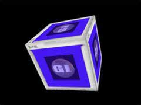

|
第29課 |
 |
|  |
Blitter 函數:
類似於DirectDraw的blit函數，過時的技術，我們有實現了它。它非常的簡單，就是把一塊紋理貼到另一塊紋理上。 |
|
 |
 |
這篇文章是有Andreas Lffler所寫的，它寫了一份原始的教程。過了幾天，Rob Fletcher發了封郵件給我，他重新改寫了所有的代碼，我在它的基礎上把glut的框架變換為Win32的框架。
現在讓我們開始吧！ |  |
|
下面是一個保存圖像數據的結構 |
|
typedef struct Texture_Image
{
int width; // 寬
int height; // 高
int format; // 像素格式
unsigned char *data; // 紋理數據
} TEXTURE_IMAGE;
|
接下來定義了兩個指向這個結構的指針 |
|
typedef TEXTURE_IMAGE *P_TEXTURE_IMAGE;
P_TEXTURE_IMAGE t1; // 指向保存圖像結構的指針
P_TEXTURE_IMAGE t2; // 指向保存圖像結構的指針
|
下面的函數為w*h的圖像分配內存 |
|
P_TEXTURE_IMAGE AllocateTextureBuffer( GLint w, GLint h, GLint f)
{
P_TEXTURE_IMAGE ti=NULL;
unsigned char *c=NULL;
ti = (P_TEXTURE_IMAGE)malloc(sizeof(TEXTURE_IMAGE)); // 分配圖像結構內存
if( ti != NULL ) {
ti->width = w; // 設置寬度
ti->height = h; // 設置高度
ti->format = f; // 設置格式
// 分配w*h*f個字節
c = (unsigned char *)malloc( w * h * f);
if ( c != NULL ) {
ti->data = c;
}
else {
MessageBox(NULL,"內存不足","分配圖像內存錯誤",MB_OK | MB_ICONINFORMATION);
return NULL;
}
}
else
{
MessageBox(NULL,"內存不足","分配圖像結構內存錯誤",MB_OK | MB_ICONINFORMATION);
return NULL;
}
return ti; // 返回指向圖像數據的指針
}
|
下面的函數釋放分配的內存 |
|
// 釋放圖像內存
void DeallocateTexture( P_TEXTURE_IMAGE t )
{
if(t)
{
if(t->data)
{
free(t->data); // 釋放圖像內存
}
free(t); // 釋放圖像結構內存
}
}
|
下面我們來讀取*.raw的文件，這個函數有兩個參數，一個為文件名，另一個為保存文件的圖像結構指針。 |
|
// 讀取*.RAW文件，並把圖像文件上下翻轉一符合OpenGL的使用格式。
int ReadTextureData ( char *filename, P_TEXTURE_IMAGE buffer)
{
FILE *f;
int i,j,k,done=0;
int stride = buffer->width * buffer->format; // 記錄每一行的寬度，以字節為單位
unsigned char *p = NULL;
f = fopen(filename, "rb"); // 打開文件
if( f != NULL ) // 如果文件存在
{
|
如果文件存在，我們通過一個循環讀取我們的紋理，我們從圖像的最下面一行，一行一行的讀取圖像。 |
|
for( i = buffer->height-1; i >= 0 ; i-- ) // 循環所有的行，從最下面以行開始，一行一行的讀取
{
p = buffer->data + (i * stride );
for ( j = 0; j < buffer->width ; j++ ) // 讀取每一行的數據
{
|
下面的循環讀取每一像素的數據，並把alpha設為255 |
|
for ( k = 0 ; k < buffer->format-1 ; k++, p++, done++ )
{
*p = fgetc(f); // 讀取一個字節
}
*p = 255; p++; // 把255存儲在alpha通道中
}
}
fclose(f); // 關閉文件
}
|
如果出現錯誤，彈出一個提示框 |
|
else
{
MessageBox(NULL,"不能打開文件","圖像錯誤",MB_OK | MB_ICONINFORMATION);
}
return done; // 返回讀取的字節數
}
|
下面的代碼創建一個2D紋理，和前面課程介紹的方法相同 |
|
void BuildTexture (P_TEXTURE_IMAGE tex)
{
glGenTextures(1, &texture[0]);
glBindTexture(GL_TEXTURE_2D, texture[0]);
glTexParameteri(GL_TEXTURE_2D,GL_TEXTURE_MAG_FILTER,GL_LINEAR);
glTexParameteri(GL_TEXTURE_2D,GL_TEXTURE_MIN_FILTER,GL_LINEAR);
gluBuild2DMipmaps(GL_TEXTURE_2D, GL_RGB, tex->width, tex->height, GL_RGBA, GL_UNSIGNED_BYTE, tex->data);
}
|
現在到了blitter函數的地方了，他運行你把一個圖像的任意部分複製到另一個圖像的任意部分，並混合。
src為原圖像
dst為目標圖像
src_xstart,src_ystart為要複製的部分在原圖像中的位置
src_width,src_height為要複製的部分的寬度和高度
dst_xstart,dst_ystart為複製到目標圖像時的起始位置
上面的意思是把原圖像中的(src_xstart,src_ystart)-(src_width,src_height)複製到目標圖像中(dst_xstart,dst_ystart)-(src_width,src_height)
blend設置是否啟用混合，0為不啟用，1為啟用
alpha設置源圖像中顏色在混合時所佔的百分比 |
|
void Blit( P_TEXTURE_IMAGE src, P_TEXTURE_IMAGE dst, int src_xstart, int src_ystart, int src_width, int src_height,
int dst_xstart, int dst_ystart, int blend, int alpha)
{
int i,j,k;
unsigned char *s, *d;
// 掐斷alpha的值
if( alpha > 255 ) alpha = 255;
if( alpha < 0 ) alpha = 0;
// 判斷是否啟用混合
if( blend < 0 ) blend = 0;
if( blend > 1 ) blend = 1;
d = dst->data + (dst_ystart * dst->width * dst->format); // 要複製的像素在目標圖像數據中的開始位置
s = src->data + (src_ystart * src->width * src->format); // 要複製的像素在源圖像數據中的開始位置
for (i = 0 ; i < src_height ; i++ ) // 循環每一行
{
s = s + (src_xstart * src->format); // 移動到下一個像素
d = d + (dst_xstart * dst->format);
for (j = 0 ; j < src_width ; j++ ) // 循環複製一行
{
for( k = 0 ; k < src->format ; k++, d++, s++) // 複製每一個字節
{
if (blend) // 如果啟用了混合
*d = ( (*s * alpha) + (*d * (255-alpha)) ) >> 8; // 根據混合複製顏色
else
*d = *s; // 否則直接複製
}
}
d = d + (dst->width - (src_width + dst_xstart))*dst->format; // 移動到下一行
s = s + (src->width - (src_width + src_xstart))*src->format;
}
}
|
初始化代碼基本不變，我們使用新的函數，加載*.raw紋理。並把紋理t2的一部分blit到t1中混合，接著按常規的方法設置2D紋理。 |
|
int InitGL(GLvoid)
{
t1 = AllocateTextureBuffer( 256, 256, 4 ); // 為圖像t1分配內存
if (ReadTextureData("Data/Monitor.raw",t1)==0) // 讀取圖像數據
{ // 失敗則彈出對話框
MessageBox(NULL,"不能讀取 'Monitor.raw' 文件","讀取錯誤",MB_OK | MB_ICONINFORMATION);
return FALSE;
}
t2 = AllocateTextureBuffer( 256, 256, 4 ); // 為圖像t2分配內存
if (ReadTextureData("Data/GL.raw",t2)==0) // 讀取圖像數據
{ // 失敗則彈出對話框
MessageBox(NULL,"不能讀取 'GL.raw' 文件","讀取錯誤 ",MB_OK | MB_ICONINFORMATION);
return FALSE;
}
|
把圖像t2的（127，127）-（256，256）部分和圖像t1的（64，64，196，196）部分混合 |
|
// 把圖像t2的（127，127）-（256，256）部分和圖像t1的（64，64，196，196）部分混合
Blit(t2,t1,127,127,128,128,64,64,1,127);
|
下面的代碼和前面一樣，釋放分配的空間，創建紋理 |
|
BuildTexture (t1); // 把t1圖像加載為紋理
DeallocateTexture( t1 ); // 釋放圖像數據
DeallocateTexture( t2 );
glEnable(GL_TEXTURE_2D); // 使用2D紋理
glShadeModel(GL_SMOOTH); // 使用光滑著色
glClearColor(0.0f, 0.0f, 0.0f, 0.0f); // 設置背景色為黑色
glClearDepth(1.0); // 設置深度緩存清楚值為1
glEnable(GL_DEPTH_TEST); // 使用深度緩存
glDepthFunc(GL_LESS); // 設置深度測試函數
return TRUE;
}
|
下面的代碼繪製一個盒子 |
|
GLvoid DrawGLScene(GLvoid)
{
glClear(GL_COLOR_BUFFER_BIT | GL_DEPTH_BUFFER_BIT); // 清楚顏色緩存和深度緩存
glLoadIdentity();
glTranslatef(0.0f,0.0f,-5.0f);
glRotatef(xrot,1.0f,0.0f,0.0f);
glRotatef(yrot,0.0f,1.0f,0.0f);
glRotatef(zrot,0.0f,0.0f,1.0f);
glBindTexture(GL_TEXTURE_2D, texture[0]);
glBegin(GL_QUADS);
// 前面
glNormal3f( 0.0f, 0.0f, 1.0f);
glTexCoord2f(1.0f, 1.0f); glVertex3f( 1.0f, 1.0f, 1.0f);
glTexCoord2f(0.0f, 1.0f); glVertex3f(-1.0f, 1.0f, 1.0f);
glTexCoord2f(0.0f, 0.0f); glVertex3f(-1.0f, -1.0f, 1.0f);
glTexCoord2f(1.0f, 0.0f); glVertex3f( 1.0f, -1.0f, 1.0f);
// 後面
glNormal3f( 0.0f, 0.0f,-1.0f);
glTexCoord2f(1.0f, 1.0f); glVertex3f(-1.0f, 1.0f, -1.0f);
glTexCoord2f(0.0f, 1.0f); glVertex3f( 1.0f, 1.0f, -1.0f);
glTexCoord2f(0.0f, 0.0f); glVertex3f( 1.0f, -1.0f, -1.0f);
glTexCoord2f(1.0f, 0.0f); glVertex3f(-1.0f, -1.0f, -1.0f);
// 上面
glNormal3f( 0.0f, 1.0f, 0.0f);
glTexCoord2f(1.0f, 1.0f); glVertex3f( 1.0f, 1.0f, -1.0f);
glTexCoord2f(0.0f, 1.0f); glVertex3f(-1.0f, 1.0f, -1.0f);
glTexCoord2f(0.0f, 0.0f); glVertex3f(-1.0f, 1.0f, 1.0f);
glTexCoord2f(1.0f, 0.0f); glVertex3f( 1.0f, 1.0f, 1.0f);
// 下面
glNormal3f( 0.0f,-1.0f, 0.0f);
glTexCoord2f(0.0f, 0.0f); glVertex3f( 1.0f, -1.0f, 1.0f);
glTexCoord2f(1.0f, 0.0f); glVertex3f(-1.0f, -1.0f, 1.0f);
glTexCoord2f(1.0f, 1.0f); glVertex3f(-1.0f, -1.0f, -1.0f);
glTexCoord2f(0.0f, 1.0f); glVertex3f( 1.0f, -1.0f, -1.0f);
// 右面
glNormal3f( 1.0f, 0.0f, 0.0f);
glTexCoord2f(1.0f, 0.0f); glVertex3f( 1.0f, -1.0f, -1.0f);
glTexCoord2f(1.0f, 1.0f); glVertex3f( 1.0f, 1.0f, -1.0f);
glTexCoord2f(0.0f, 1.0f); glVertex3f( 1.0f, 1.0f, 1.0f);
glTexCoord2f(0.0f, 0.0f); glVertex3f( 1.0f, -1.0f, 1.0f);
// 左面
glNormal3f(-1.0f, 0.0f, 0.0f);
glTexCoord2f(0.0f, 0.0f); glVertex3f(-1.0f, -1.0f, -1.0f);
glTexCoord2f(1.0f, 0.0f); glVertex3f(-1.0f, -1.0f, 1.0f);
glTexCoord2f(1.0f, 1.0f); glVertex3f(-1.0f, 1.0f, 1.0f);
glTexCoord2f(0.0f, 1.0f); glVertex3f(-1.0f, 1.0f, -1.0f);
glEnd();
xrot+=0.3f;
yrot+=0.2f;
zrot+=0.4f;
return TRUE; // 一切 OK
}
|
KillGLWindow() 函數沒有變化 |
|
|
CreateGLWindow函數沒有變化 |
|
|
WinMain() 沒有變化 |
|
|
好了，現你可以很輕鬆的繪製很多混合效果。如果你有什麼好的建議，請告訴我。
 |
版權與使用聲明:
我是個對學習和生活充滿激情的普通男孩,在網絡上我以DancingWind為暱稱，我的聯繫方式是zhouwei02@mails.tsinghua.edu.cn，如果你有任何問題，都可以聯繫我。
引子
網絡是一個共享的資源，但我在自己的學習生涯中浪費大量的時間去搜索可用的資料，在現實生活中花費了大量的金錢和時間在書店中尋找資料，於是我給自己起了個暱稱DancingWind，其意義是想風一樣從各個知識的站點中吸取成長的養料。在飄蕩了多年之後，我決定把自己收集的資料整理為一個統一的資源庫。
版權聲明
所有DancingWind發表的內容，大多都來自共享的資源，所以我沒有資格把它們據為己有，或聲稱自己為這些資源作出了一點貢獻。故任何人都可以複製，修改，重新發表，甚至以自己的名義發表，我都不會追究，但你在做以上事情的時候必須保證內容的完整性，給後來的人一個完整的教程。最後，任何人不能以這些資料的任何部分，謀取任何形式的報酬。
發展計劃
在國外，很多資料都是很多人花費幾年的時間慢慢積累起來的。如果任何人有興趣與別人共享你的知識，我很歡迎你與我聯繫，但你必須同意我上面的聲明。
感謝
感謝我的母親一直以來對我的支持和在生活上的照顧。
感謝我深愛的女友田芹，一直以來默默的在精神上和生活中對我的支持，她甚至把買衣服的錢都用來給我買書了，她真的是我見過的最好的女孩，希望我能帶給她幸福。
資源下載:
文檔 網頁格式
PDF格式
源碼 RAR格式 |
|
|